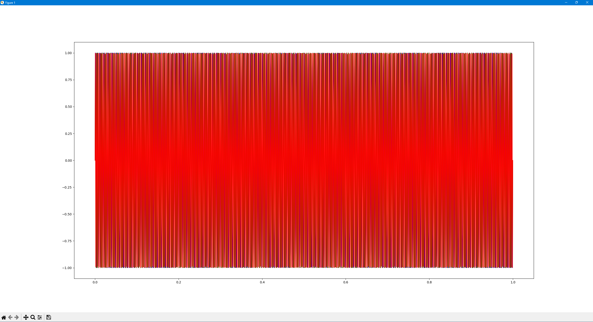
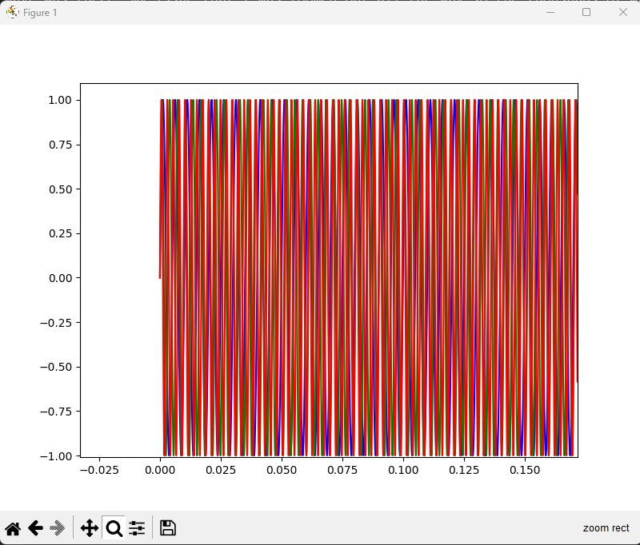
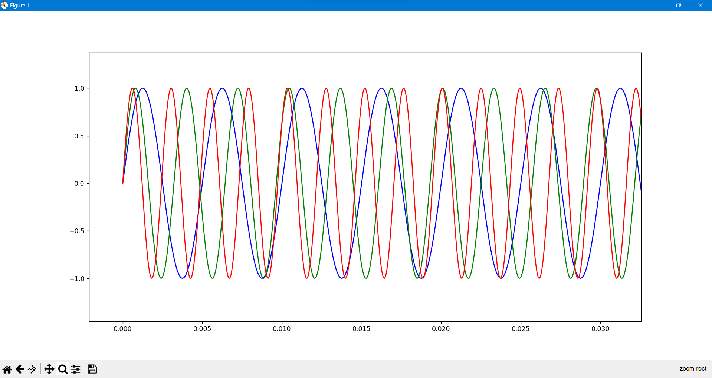
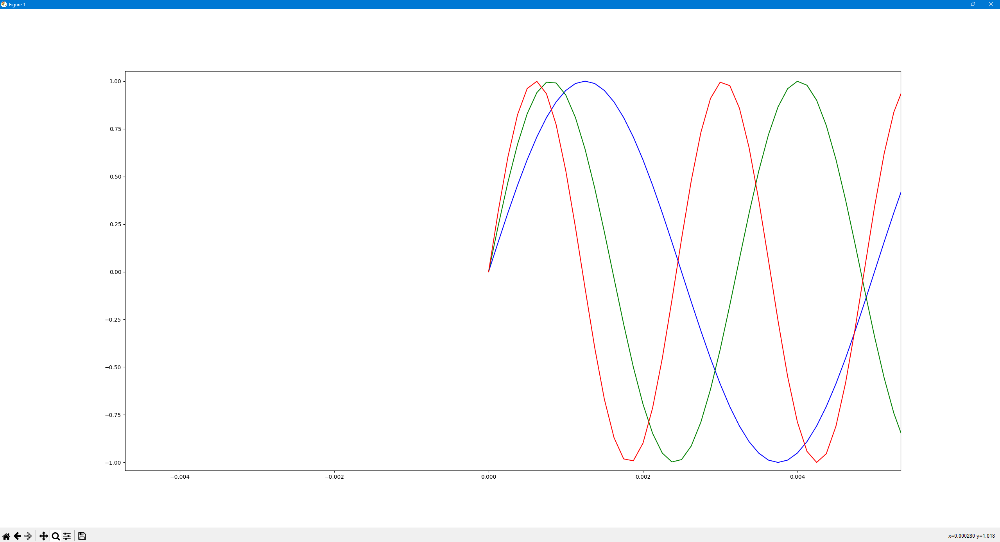

For this assignment I thought I was having issues with getting the plot of the sin waves from the tone I was creating. The error I thought I had was that the graph appeared to be a giant rectangle. After I talked with a friend he showed me how to zoom in on the matplotlib table and that the sin wave was there, my issue that I was zoomed out all the way so the thousands of waves caused it to look like a recangle without zooming in.
   Here we see the graph shows a better sin wave representation with the Blue equaling a frequency of 200, green equaing 311, and red equaling 411. Overall I could not tell any difference between the sample rate of 48000 and 8000. I thought the period of the wave would've increased when the sample rate went down but I did not see that in my results.